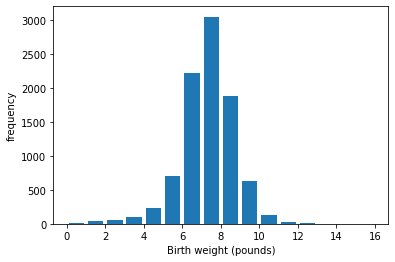
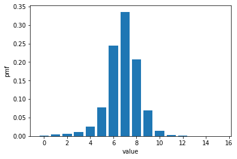
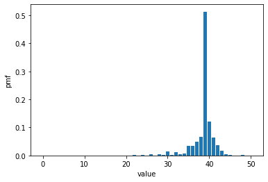
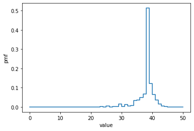
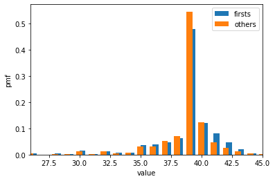
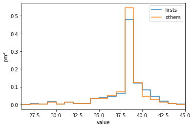
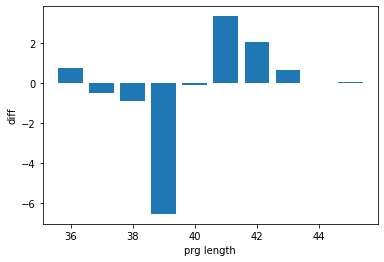
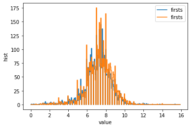
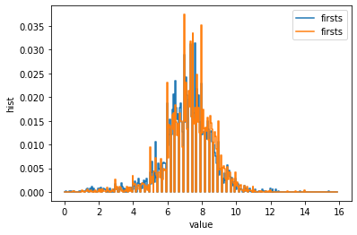
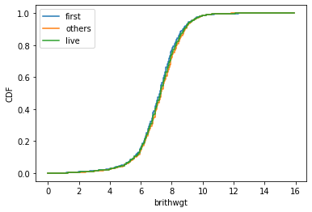

---
title: "Probability and Statistics Week 6"
author: "Siyun Min"
date: "2021-10-08"
format:
html:
code-fold: false
---Probability and Statistics Week 6
import pandas as pd
import numpy as np
from matplotlib import pyplot as pltpreg = pd.read_csv("./LectureCode/2002FemPreg.tsv", sep='\t')
live = preg[preg['outcome'] == 1]plt.hist(live['birthwgt_lb'], rwidth=0.8, label='birthwgt_lb', bins=range(int(live['birthwgt_lb'].min()), int(live['birthwgt_lb'].max() + 2)))
plt.xlabel('Birth weight (pounds)')
plt.ylabel('frequency')
plt.show()
plt.close()
hist = {key: val for key, val in enumerate(np.bincount(live['birthwgt_lb'].dropna()))}hist{0: 8,
1: 40,
2: 53,
3: 98,
4: 229,
5: 697,
6: 2223,
7: 3049,
8: 1889,
9: 623,
10: 132,
11: 26,
12: 10,
13: 3,
14: 3,
15: 1}n = sum(hist.values())
pmf = hist.copy()
for x, freq in hist.items():
pmf[x] = freq / npmf{0: 0.0008806693086745927,
1: 0.004403346543372964,
2: 0.005834434169969176,
3: 0.01078819903126376,
4: 0.025209158960810215,
5: 0.07672831351827389,
6: 0.24471598414795245,
7: 0.3356450902686041,
8: 0.2079480405107882,
9: 0.06858212241303391,
10: 0.01453104359313078,
11: 0.0028621752531924264,
12: 0.001100836635843241,
13: 0.00033025099075297226,
14: 0.00033025099075297226,
15: 0.00011008366358432408}plt.bar(pmf.keys(), pmf.values())
plt.xlabel('value')
plt.ylabel('pmf')
plt.show()
plt.close()
print(sum(pmf.values()))1.0values = [1, 2, 2, 3, 5]
pmf = {key : val/len(values) for key, val in enumerate(np.bincount(values)) if val != 0}pmf{1: 0.2, 2: 0.4, 3: 0.2, 5: 0.2}pmf = {key: val / len(live['prglngth'].dropna()) for key, val in enumerate(np.bincount(live['prglngth'].dropna()))}plt.bar(pmf.keys(), pmf.values())
plt.xlabel('value')
plt.ylabel('pmf')
plt.show()
plt.close()
plt.step(list(pmf.keys()), list(pmf.values()))
plt.xlabel('value')
plt.ylabel('pmf')
plt.show()
plt.close()
firsts = live[live['birthord'] == 1]
others = live[live['birthord'] > 1]
first_pmf = {key: val / len(firsts['prglngth'].dropna()) for key, val in enumerate(np.bincount(firsts['prglngth'].dropna()))}
others_pmf = {key: val / len(others['prglngth'].dropna()) for key, val in enumerate(np.bincount(others['prglngth'].dropna()))}plt.bar(first_pmf.keys(), first_pmf.values(), width=0.5, align='edge', label='firsts')
plt.bar(others_pmf.keys(), others_pmf.values(), width=0.5, align='center', label='others')
plt.xlabel('value')
plt.ylabel('pmf')
plt.legend()
plt.xlim(26, 45)
plt.show()
plt.close()
plt.step(list(first_pmf.keys()), list(first_pmf.values()), label='firsts')
plt.step(list(others_pmf.keys()), list(others_pmf.values()), label='others')
plt.xlabel('value')
plt.ylabel('pmf')
plt.xlim(26, 45)
plt.legend()
plt.show()
plt.close()
weeks = range(36, 46)
diffs = []
for week in weeks:
p1 = first_pmf[week]
p2 = others_pmf[week]
diff = 100 * (p1 - p2)
diffs.append(diff)
plt.bar(weeks, diffs)
plt.xlabel('prg length')
plt.ylabel('diff')
plt.show()
plt.close()
live = preg[preg['outcome'] == 1]
firsts = live[live['birthord'] == 1]
others = live[live['birthord'] > 1]first_wgt_dropna = firsts['totalwgt_lb'].dropna()
other_wgt_dropna = others['totalwgt_lb'].dropna()first_hist, first_bins = np.histogram(first_wgt_dropna, bins=np.arange(0, 16, 0.05))
other_hist, other_bins = np.histogram(other_wgt_dropna, bins=np.arange(0, 16, 0.05))
first_pmf = {key: val / len(first_wgt_dropna) for key, val in zip(first_bins, first_hist)}
other_pmf = {key: val / len(other_wgt_dropna) for key, val in zip(other_bins, other_hist)}plt.step(first_bins[:-1], first_hist, label='firsts')
plt.step(other_bins[:-1], other_hist, label='firsts')
plt.xlabel('value')
plt.ylabel('hist')
plt.legend()
plt.show()
plt.close()
plt.step(list(first_pmf.keys()), list(first_pmf.values()), label='firsts')
plt.step(list(other_pmf.keys()), list(other_pmf.values()), label='firsts')
plt.xlabel('value')
plt.ylabel('hist')
plt.legend()
plt.show()
plt.close()
def PercentileRank(scores, your_score):
count = 0
for score in scores:
if score <= your_score:
count += 1
percentile_rank = 100 * count / len(scores)
return percentile_rankt = [55, 66, 77, 88, 99]
PercentileRank(t, 88)80.0def Percentile(scores, percentile_rank):
for score in sorted(scores):
if PercentileRank(scores, score) >= percentile_rank:
return score
Percentile(t, 45)77def Percentile2(scores, percentile_rank):
scores.sort()
index = percentile_rank * (len(scores) - 1) // 100
return scores[index]
Percentile2(t, 45)66def evalCdf(sample, x):
count = 0.0
for value in sorted(sample):
if value <= x:
count += 1
prob = count / len(sample)
return prob
def getValCdf(sample, cdf_value):
for score in sorted(sample):
if evalCdf(sample, score) >= cdf_value:
return score
def evalCdfCdf(cdf, target_val):
for val, score in sorted(cdf.items()):
if val >= target_val:
return score
def getValCdfCdf(cdf, cdf_value):
for val, score in sorted(cdf.items()):
if score >= cdf_value:
return valt = [1, 2, 3, 4, 5]
print(evalCdf(t, 3))0.6def pmf2cdf(pmf_dict):
cdf_dict = {}
now = 0.0
for k, v in sorted(pmf_dict.items()):
now += v
cdf_dict[k] = now
return cdf_dictfirst_hist, first_bins = np.histogram(first_wgt_dropna, bins=np.arange(0, 16, 0.05))
other_hist, other_bins = np.histogram(other_wgt_dropna, bins=np.arange(0, 16, 0.05))
live_wgt_dropna = live['totalwgt_lb'].dropna()
live_hist, live_bins = np.histogram(live_wgt_dropna, bins=np.arange(0, 16, 0.05))
first_pmf = {key: val / len(first_wgt_dropna) for key, val in zip(first_bins, first_hist)}
other_pmf = {key: val / len(other_wgt_dropna) for key, val in zip(other_bins, other_hist)}
live_pmf = {key: val / len(live_wgt_dropna) for key, val in zip(live_bins, live_hist)}
first_cdf = pmf2cdf(first_pmf)
other_cdf = pmf2cdf(other_pmf)
live_cdf = pmf2cdf(live_pmf)plt.step(list(first_cdf.keys()), list(first_cdf.values()), label='first')
plt.step(list(other_cdf.keys()), list(other_cdf.values()), label='others')
plt.step(list(live_cdf.keys()), list(live_cdf.values()), label='live')
plt.xlabel('brithwgt')
plt.ylabel('CDF')
plt.legend()
plt.show()
plt.close()
sample = np.random.choice(live_wgt_dropna, 20, replace=True)
sample_hist, sample_bins = np.histogram(sample, bins=np.arange(0, 16, 0.05))
sample_pmf = {key: val for key, val in zip(sample_bins, sample_hist)}
sample_cdf = pmf2cdf(sample_pmf)
plt.step(list(sample_cdf.keys()), list(sample_cdf.values()))
plt.show()
plt.close()